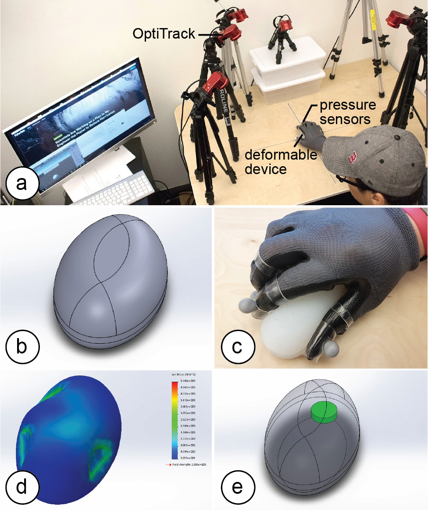
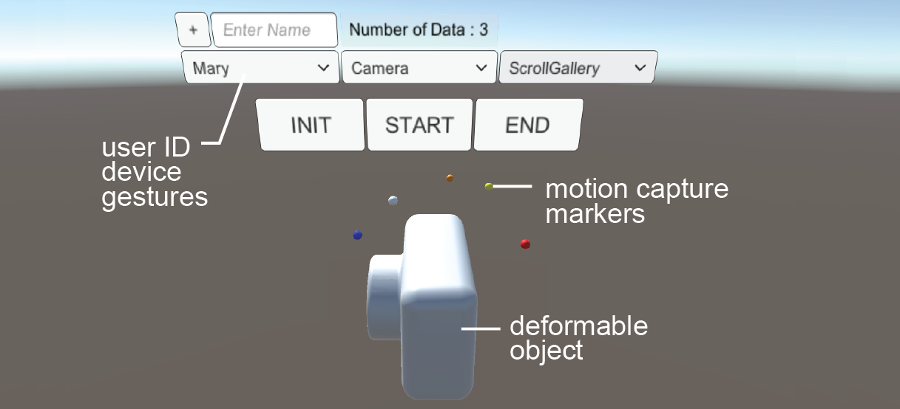
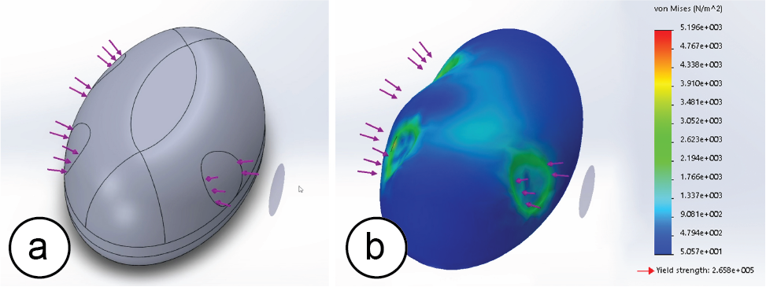
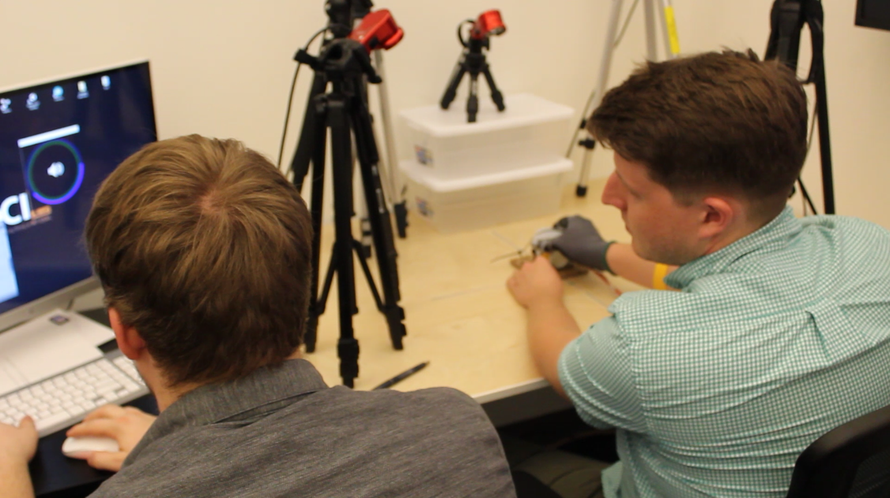
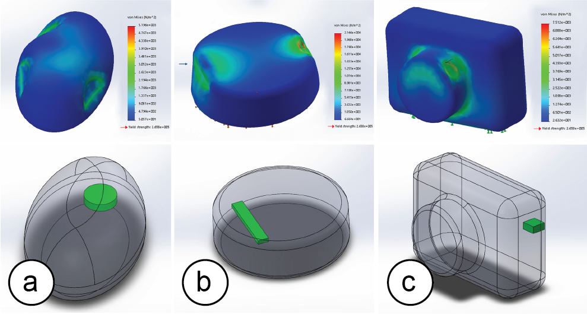
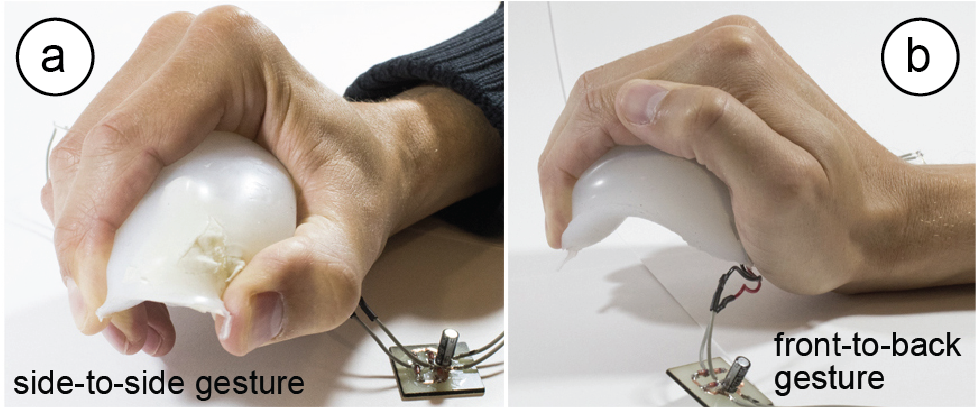
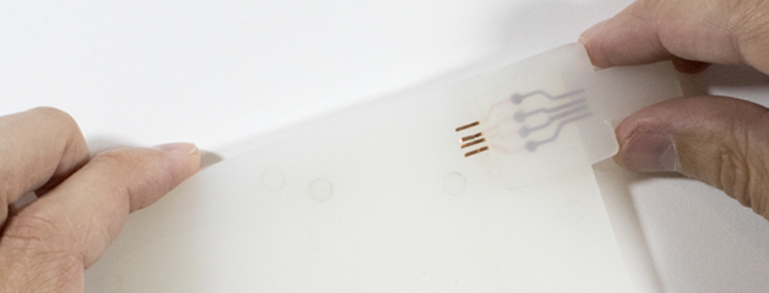

Publication
Paul Worgan, Kevin Reuss, Stefanie Mueller.
Integrating Electronic Components into Deformable Objects Based on User Interaction Data
In Proceedings of
TEI ’19.
DOIPDFVideo
Video
Integrating Electronic Components into Deformable Objects
Based on User Interaction Data.

Figure 1. (a) Our design tool collects gesture data to help with the placement of electric components when designing deformable devices. Designers only have to (b) create a 3D model of the device & silicone cast it, (c) record interaction data, (d) feed the data back to our stress analysis tool, which then (e) suggests a placement based on areas of least or most stress (i.e., deformation).
A key challenge when designing deformable user interfaces is the integration of rigid electronic components with the soft deformable device. In this paper, we propose to place electronic components based on how the user is interacting with the device, i.e., in which way the device is being deformed when the user performs gestures.
To identify optimum locations for placing electronic components, we developed a design tool that takes as input a 3D model of the deformable device and a set of captured user gestures. It then visualizes the stress distribution resulting from the gestures applied to the deformable device and suggests where not to place components because the location is highly deformed when users interact (e.g., a rigid battery that would constraint interaction); or alternatively where to place components to sense deformation more accurately (e.g., a bend sensor to detect a specific gesture) and efficiently (e.g., an energy harvesting component).
We evaluated our approach by collecting interaction data from 12 users across three deformable devices (a watch, a camera, and a mouse) and applied the resulting stress distributions to the placement of selected electronic components.
Introduction
Since the early 2000s, HCI researchers envision a future in which devices will no longer be rigid but deform-able (Organic User Interfaces [6]). Moving away from rigid objects and being able to squeeze, stretch, and twist devices offers many advantages, including an increased input space (Gummi [19]), output space (Surflex [3]), and better ergonomics [6].
One key challenge when designing deformable user interfaces is the integration of electronic components with the deformable device. While research points towards the development of flexible electronics, such as deformable displays (Stretchis [23]) and circuitry (SiliconeDevices [14]), many electronic components remain rigid and when placed in the wrong location interfere with the user interaction. Even for soft components, such as bend sensors and piezo-electric foils used for energy harvesting, the right placement is important since the interaction can be sensed more accurately and the energy output per gesture can be increased.
In this paper, we present a design tool that supports designers in the process of placing electronic components inside a deformable device. The key idea is to incorporate knowledge about how the user is interacting with the device to place and orient electronic components according to a device and its corresponding gesture set.
Design tool for Deformable Devices
Our design tool allows designers to record and process interaction data while creating a deformable device.
#1 3D Modeling of the Deformable Device
Designers start by creating the form factor of the deformable device in a 3D modeling program. Figure 1b shows the 3D model of a deformable mouse the designer created.
#2 Collecting Interaction Data
Once the 3D model is finished, designers can create a physical prototype from it (e.g., from silicone) and start recording interaction data from gestures. To accurately determine how a user deforms the device, we collect both the position of each finger on the device as well as the amount of pressure each finger applies to the device. To determine the position, we use an optical motion capture system (OptiTrack Flex13). As can be seen in Figure 1a, we place six cameras on a desk to track the user’s interaction with the deformable device on the table. To detect the applied force during interaction, we built a custom glove with pressure sensors on the finger tips.
Designers can either record interactions themselves or collect data from other users. For this, we provide a custom recording interface implemented in Unity3D (Figure 2). The designer can add new users, specify the deformable device being used, define a gesture, and record multiple takes of a gesture. The view also shows live data from the motion capture system and displays the deformable device as a 3D model for reference. The output from a recording session is a file that the designer can load into the 3D editor for subsequent stress and placement analysis.

Figure 2. Recording Interface.
#3 Computing the Stress Distribution Map
In the 3D editor, the designer can now execute a custom plugin we wrote to import the interaction data (Figure 3).

Figure 3. (a) Finger imprints and applied force, (b) resulting stress distribution.
Loading the interaction data applies the finger imprints and corresponding forces from the grasp to the 3D model automatically (Figure 3a) and then executes a finite element analysis to determine the stress distribution (Figure 3b).
#4 Placing Electronic Components
Based on the generated stress distribution map our system recommends a location for placing the electronic components by providing the 3D location of the most or least stress (Figure 1e), which allows the designer to make an informed decision about how to best integrate the part.
Testing our system with a group of users
We tested our workflow by recording data from 12 users recruited from our institution (1 female, age 22-44, mean: 26.91). We asked them to perform gestures with three deformable devices: a mouse, a camera, and a smart watch. The study was conducted as within-subjects and participants were randomly assigned an order. We used the same setup as described in ‘Collecting Interaction Data’, i.e. the motion capture system on a table and users were wearing the pressure sensing glove (Figure 4).
Our study contained the following tasks: (1) Camera: ‘Squeeze the camera lens to zoom in the image. Zoom until the tree in the image is displayed full screen.’ (2) SmartWatch: ‘Squeeze the smart watch to adjust the volume of the music. Adjust the volume to 80%.’ (3) Mouse: ‘Squeeze the mouse to scroll the webpage. Scroll the webpage to the third headline.’
We gave users 5 minutes to familiarize themselves with the devices and the pressure sensing glove, i.e. they were allowed to perform test grasps on the deformable objects and to lift and tilt them to get a better feeling for the devices.
For each device and gesture, we briefly demonstrated how to perform it. Afterwards, users performed 20 trials per gesture. We started the recording using the ‘start’ button and stopped recording by pressing the ‘stop’ button of our recording interface (Figure 2). The data collection for each user took 20 minutes or less. The recorded data included the motion data for each finger as well as the corresponding pressure values for each finger.

Figure 4. Data collection.
Figure 5 shows example stress distributions from the collected user data for all devices and the suggested placement based on the aggregated data of all users: (a) For the deformable mouse, we asked the system to mark the area of least stress to best integrate a rigid button cell for energy supply without interfering with the user interaction. (b) For the smart watch, we asked the system to mark the area of largest stress to place a piezo-electric foil that harvests more energy when strongly deformed. (c) For the camera, we asked the system to mark the area of least stress facing outwards to optimally place a connector for data transfer of the camera images to a computer.

Figure 5. Stress distribution and recommended placement for (a) a button cell, (b) a piezo-electric foil, (c) a data-transfer connector.
Use Cases
We next describe two example use cases that place electric components based on the stress distribution results. While our approach applies to many different domains, such as placing sensors for more accurate user interaction tracking or laying out circuitry to avoid breakage, we focus on energy supply components as brief examples.
Example #1: Energy-Harvesting (Largest Stress)
In energy harvesting, the more a piezo-electric foil is deformed, the more energy can be harvested. To demonstrate that more energy can be harvested when the piezoelectric foil is placed according to specific gestures, we ran a simple experiment. We placed two piezoelectric foils inside the deformable mouse (one left-to-right, one front-to-back). We then performed two gestures as shown in Figure 6: (1) a front-to-back squeeze (as in Adaptive Mouse [20]), and (2) a side-to-side squeeze (as in Inflatable Mouse [11]). We collected the mean energy over 10 repetitions.

Figure 6. (a) Side-to-side, (b) front-to-back.
Our results show that when the piezoelectric foil is mounted orthogonal to the direction of the performed gesture, i.e., in the location of largest stress, it generates a larger amount of energy. For instance, the opposing side piezo + front-to-back gesture generated 7 times more energy compared to the aligned front-to-back piezo + front-to-back gesture (1.0538 µJ vs. 0.1343 µJ). Conversely, the opposing front-to-back piezo + side-to-side gesture generated over 3 times the amount of energy as the aligned side-to-side piezo + side-to-side gesture (0.6624 µJ vs. 0.1925 µJ). Thus, placing the piezo-electric foil according to the user interaction helped to increase energy supply.
Example #2: Plug-and-Socket Connector (Least Stress)
Connectors are sensitive to deformation since the plug and socket may delaminate and lose the electric connection. To demonstrate that placing connectors in the areas of least stress reduces delamination, we ran another experiment. First, we created a soft plug-and-socket connector (silicone, flexible copper tape contacts) to reduce the chance of breakage in general (Figure 7). Next, we measured how much the connector delaminates (changes in contact resistance) by subjecting the connector to different bend radii.

Figure 7. Deformable connector integrated into a deformable phone that folds along the long side.
We found that for bend angles from -70º (bend away from connector) to 0 (no bending) to +20º (bend towards connector) the contact resistant was approximately 60mΩ. For larger angles, however, the quality of the connection dropped quickly (+25º = 210 mΩ, +30º = 330 mΩ). Thus, placing the connector according to the gesture was important to maintain a good electric connection.
Implementation
Our recording interface is implemented in Unity3D using C#. To apply the interaction data to the 3D model of the device we implemented a SolidWorks plugin in Visual Basic.
#1 Pressure Sensor Input
To build the pressure glove, we bought a workshop glove and attached force resistive pressure sensors (Interlink Electronics FSR 400) to the finger tips. We connected the force sensors to an Arduino that we enclosed in a 3D printed box and attached to the upper arm of the user. The Arduino is connected to a computer that runs a python script to collect the pressure values. Each pressure sensor returns an analog value which we map to a pressure value according to the specification (see Figure 3 in [7]). We use the pressure values in two ways: (1) during data collection, the data is forwarded to the application to provide users with visual feedback while performing the gesture (e.g., zooming the image in the deformable camera example). (2) When calculating the stress distribution, we use the pressure values to determine the amount of force each finger applied to the device.
#2 OptiTrack Input
To enable streaming with OptiTrack, we activated the Streaming Engine in the software Motive:Tracker. To receive the streamed data in Unity3D, we attached the OptitrackStreamingClient.cs script to one UI element. When we receive streamed data, we convert the marker coordinates from the OptiTrack coordinate system to the Unity3D coordinate system using a scaling factor. We then assign the values from each of the pressure sensors to the corresponding finger. To identify which marker represents which finger, we perform a calibration gesture (flat hand).
#3 Generating the Specification File
Our system automatically stores all finger locations and pressures values in a file, containing start location, end location, and pressure value for each finger.
#4 Calculating the Stress Distribution Map
Our SolidWorks plugin automatically reads the file and uses the start and end coordinates of each finger to generate a direction vector that approximates the finger movement. It then generates a representation of the finger imprint by (1) creating a plane perpendicular to the direction vector, (2) placing a circle on the plane, and (3) projecting the circle along the direction vector onto the model. This results in a finger imprint on the surface of the 3D model. We then apply the corresponding pressure value to each finger imprint and run a finite element analysis. The result is a stress distribution map across the model for an individual user and an individual gesture.
To average the data over multiple gestures or users, we automatically export all stress values into a .csv file using a Workflow Sensitive Sensor in SolidWorks. We then run a custom script that averages the data and associates each stress value with a 3D coordinate resulting in a 3D array, i.e. a representation of voxels with associated stress values.
#5 Suggesting Locations for Energy Components
Our plugin then finds the combination of voxels with either least or most stress. It also checks for the size and orientation of the electronic component to fit them into the voxel grid. For this, our system contains a library of components including their length, width and height. If multiple regions are subject to the same amount of stress, we ask the designer for input.
#6 Material Properties for the Virtual Material
To represent the material properties of the silicone used for our devices, we created a custom virtual material in SolidWorks (i.e., we consulted the material specification sheet of the silicone we used, Ecoflex 00-30 [4], and then transferred core characteristics, such as the shore hardness and the tensile strength to the properties of the virtual material). We assign the material automatically to the 3D model before computing the stress distribution.
Discussion
While our workflow provides a first starting point to explore prototyping tools to integrate electronic components with deformable devices, we will use this section to highlight a few alternatives and directions for future work.
Motion Capture vs. Hand Simulation: While we collect gesture data from users interacting with the physical prototype of the device, interaction data can be generated through many different means. For instance, a rigged digital hand model can be used to generate different interaction patterns. We decided to use motion capture since it captures the diversity of interaction patterns among different users.
Leveraging Interaction Data for other Design Choices: While we use interaction data to place electronic components, interaction data from deformable devices can be used in many additional realms. For instance, one could harvest interaction data to generate soft compliant mechanisms that activate when specific gestures are being performed.
Aggregated vs. Individual Fit: Since the grasp pattern of each user is different, aggregated data can only provide an approximate fit. However, with advances in personal fabrication, we envision a future in which users will obtain personalized devices that are optimized specifically for them.
Conclusion
In this paper, we demonstrated how to leverage gesture data representing how a user is interacting with a deformable device to optimize the placement of electronic components during the design process. We demonstrated how our design tool collects interaction data from users, processes the data to generate a stress distribution map, and finally recommends a position for placing the electronic components based on locations of least or largest stress. For future work, we plan to extend our algorithm to also include the layout of wires inside the device. In addition, we will extend our work towards additional use cases in sensing and actuation.